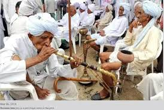

Traditional Jat attire and jewelry
Jat farmers working in the fields
Historical Jat monuments and architecture

Colorful Jat festivals and celebrations
Welcome to JatUniversal
Explore the rich history and culture of the Jat people.
Learn More“A people without the knowledge of their past history, origin and culture are like a tree without roots.” – Marcus Garvey
“Practice subordination of the interests of the individual to the interests of the community systematically, until it becomes a habit.” – Sir Chhotu Ram
“Any society is unable to maintain existence without preserving its history.” – Thakur Deshraj
“देश की समृद्धि का रास्ता गांवों के खेतों एवं खलिहानों से होकर गुजरता है।” - चौधरी चरणसिंह
“महाबला महावीर्या महासत्यपराक्रमा:। सर्वाग्रे क्षत्रिया जट्टा देवकल्पा दृढ़व्रताः।।” - देव संहिता
Featured Article
The Jat Rebellion of 1669
Learn about the Jat Rebellion of 1669, a significant event in Jat history that had far-reaching consequences.
Featured Website For More